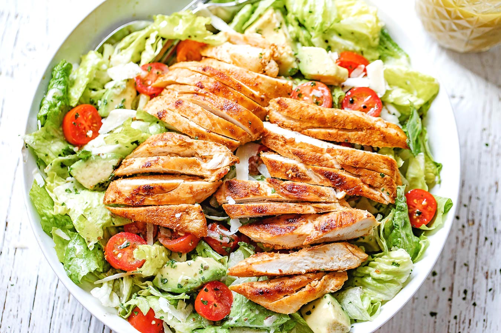

Chicken Salad
A healthy chicken salad with mixed greens, grilled chicken, and vinaigrette dressing.
- Mix flour, baking powder, sugar, and salt.Pour the tamari into a large dish and stir in the curry powder,
cumin, garlic and honey. Mix well. Slice the chicken breasts in half horizontally to make 4 fillets in total,
then add to the marinade and mix well to coat. Set aside in the fridge for at least 1 hr, or overnight, to allow
the flavours to penetrate the chicken. - Meanwhile, mix the peanut butter with the chilli sauce, lime juice, and 1 tbsp water to make a spoonable sauce.
When ready to cook the chicken, wipe a large non-stick frying pan with a little oil. Add the chicken and cook,
covered with a lid, for 5-6 mins on a medium heat, turning the fillets over for the last min, until cooked but
still moist. Set aside, covered, to rest for a few mins. - While the chicken rests, toss the lettuce wedges with the cucumber, shallot, coriander and pomegranate, and pile
onto plates. Spoon over a little sauce. Slice the chicken, pile on top of the salad and spoon over the remaining sauce.
Eat while the chicken is still warm.